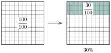
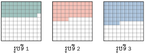
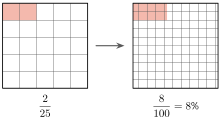
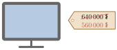
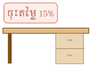

វត្ថុបំណង
- បកស្រាយចំណោទ ដើម្បីបង្ហាញសញ្ញាណភាគរយ
- ប្តូរភាគរយជាប្រភាគនិងទសភាគ ហើយច្រាសមកវិញ
- ដោះស្រាយចំណោទដែលទាក់ទងនឹងភាគរយ ។
1. សញ្ញាណភាគរយ
ឧទាហរណ៍ ៖ គេមានការ៉េទាំងអស់ \(\displaystyle 100\) ។ ការ៉េផាត់ពណ៌មាន \(\displaystyle 30\) ។ គេថាការ៉េផាត់ពណ៌មានសាមសិបភាគរយនៃការ៉េទាំងអស់ ។ គេសរសេរ \(\displaystyle 30\%\) (សាមសិបភាគរយ) ។ បើគេសរសេរចំនួនការ៉េផាត់ពណ៌ជាប្រភាគ ដោយធៀបនឹងចំនួនការ៉េទាំងអស់គឺ \(\displaystyle \frac{30}{100}\) ។

ជាទូទៅ ភាគរយ គឺជាប្រភាគដែលមានភាគបែងស្មើនឹង \(\displaystyle 100\) ។ គេប្រើនិមិត្តសញ្ញា \(\displaystyle \%\) ដើម្បីតាងភាគរយ ។
ក្នុងសិប្បកម្មមួយមានកម្មករនិងកម្មការិនី \(\displaystyle 100\) នាក់ក្នុងនោះមានកម្មការិនីចំនួន \(\displaystyle 40\) នាក់ ។ តើកម្មការិនីមានប៉ុន្មានភាគរយ? ហើយកម្មករមានប៉ុន្មានភាគរយ?
កម្មការិនីមាន \(\displaystyle 40\%\) ឬ \(\displaystyle \frac{40}{100}\) នៃកម្មករទាំងអស់ ។
កម្មករមាន \(\displaystyle 60\%\) ឬ \(\displaystyle \frac{60}{100}\) នៃកម្មករទាំងអស់ ។
សរសេរការ៉េផាត់ពណ៌នៃរូបនីមួយៗជាប្រភាគនិងភាគរយ ។

មើលចម្លើយ
2. ការប្តូរភាគរយជាប្រភាគនិងទសភាគ
ឧទាហរណ៍ 1 ៖ ប្តូរ \(\displaystyle 70\%\) ជាប្រភាគ ។

ដូច្នេះ \(\displaystyle 70\%=\frac{7}{10}\) ។
ឧទាហរណ៍ 2 ៖ ប្តូរភាគរយ \(\displaystyle 8\frac{1}{4}\%\) ជាចំនួនទសភាគ ។
ជាទូទៅ គេអាចប្តូរភាគរយទៅជាប្រភាគមួយដោយសរសេរវាជាប្រភាគមួយដែលមានភាគបែងស្មើនឹង \(\displaystyle 100\) ។ បន្ទាប់មក គេសម្រួលប្រភាគនោះទៅជាទម្រង់ងាយបើអាច ។
- ក. ប្តូរ \(\displaystyle 4.8\%\) ទៅជាប្រភាគ
- ខ. ប្តូរ \(\displaystyle 75\%\) ទៅជាចំនួនទសភាគ ។
- ក.
គេបាន ៖
\[\begin{aligned} 4.8\% &= \frac{4.8}{100} \\ &= \frac{4.8\times10}{100\times10} \\ &= \frac{48}{1000} \\ &= \frac{6}{125} \end{aligned}\] - ខ.
គេបាន ៖
\[75\%=\frac{75}{100}=0.75\]
- ក. ប្តូរ \(\displaystyle 15\%\), \(\displaystyle 32\%\), \(\displaystyle 595\%\) ជាប្រភាគ ។
- ខ. ប្តូរ \(\displaystyle 73\%\), \(\displaystyle 129\%\), \(\displaystyle 185\%\), \(\displaystyle 0.1\%\) ជាចំនួនទសភាគ ។
មើលចម្លើយ
- ក.
គេបាន ៖
\[\begin{aligned} 15\% &= \frac{15}{100}=\frac{3}{20} \\ 32\% &= \frac{32}{100}=\frac{8}{25} \\ 595\% &= \frac{595}{100}=\frac{119}{20} \end{aligned}\] - ខ.
គេបាន ៖
\[\begin{aligned} 73\% &= \frac{73}{100}=0.73 \\ 129\% &= \frac{129}{100}=1.29 \\ 185\% &= \frac{185}{100}=1.85 \\ 0.1\% &= \frac{0.1}{100}=0.001 \end{aligned}\]
3. ការប្តូរប្រភាគឬចំនួនទសភាគទៅជាភាគរយ
ឧទាហរណ៍ 1 ៖ ប្តូរប្រភាគ \(\displaystyle \frac{2}{25}\) ជាភាគរយ ។

ដូច្នេះ \(\displaystyle \frac{2}{25}=8\%\) ។
ឧទាហរណ៍ 2 ៖ ប្តូរចំនួនទសភាគ \(\displaystyle 0.03\) ជាភាគរយ ។
ជាទូទៅ គេអាចប្តូរប្រភាគមួយ ឬចំនួនទសភាគមួយទៅជាភាគរយដោយគុណវានឹង \(\displaystyle 100\%\) ។
- ក. ប្តូរប្រភាគ \(\displaystyle 2\frac{1}{8}\) ជាភាគរយ ។
- ខ. ប្តូរចំនួនទសភាគ \(\displaystyle 7.8\) ជាភាគរយ ។
- ក.
គេបាន ៖
\[\begin{aligned} 2\frac{1}{8} &= \frac{17}{8} \\ &= \frac{17}{8}\times100\% \\ &= 212.5\% \end{aligned}\] - ខ.
គេបាន ៖
\[7.8=7.8\times100\%=780\%\]
- ក. ប្តូរ \(\displaystyle \frac{2}{3}, \frac{1}{5}, \frac{7}{13}\) ជាភាគរយ ។
- ខ. ប្តូរ \(\displaystyle 1.5, 0.80, 0.007, 0.983\) ជាភាគរយ ។
មើលចម្លើយ
- ក.
គេបាន ៖
\[\begin{aligned} \frac{2}{3} &= \frac{2}{3}\times100\% = \frac{200}{3}\% \approx 66.7\% \\ \frac{1}{5} &= \frac{1}{5}\times100\% = 20\% \\ \frac{7}{13} &= \frac{7}{13}\times100\% = \frac{700}{13}\% \approx 53.8\% \end{aligned}\] - ខ.
គេបាន ៖
\[\begin{aligned} 1.5 &= 1.5\times100\% = 150\% \\ 0.80 &= 0.80\times100\% = 80\% \\ 0.007 &= 0.007\times100\% = 0.7\% \\ 0.983 &= 0.983\times100\% = 98.3\% \end{aligned}\]
4. ចំណោទភាគរយ
4.1. ការសរសេរបរិមាណមួយជាភាគរយនៃបរិមាណមួយទៀត
ឧទាហរណ៍ 1 ៖ នៅក្នុងអនុវិទ្យាល័យមួយមានគ្រូបង្រៀន \(\displaystyle 70\) នាក់ ក្នុងនោះមាន \(\displaystyle 56\) នាក់ជាអ្នកគ្រូ ។ រកភាគរយគ្រូបង្រៀនជាអ្នកគ្រូ និងភាគរយគ្រូបង្រៀនជាលោកគ្រូ ។
គេដឹងថាចំនួនអ្នកគ្រូនៅក្នុងសាលាមាន \(\displaystyle 56\) នាក់ក្នុងចំណោមគ្រូបង្រៀន \(\displaystyle 70\) នាក់ ។ ចំនួនអ្នកគ្រូតាងដោយប្រភាគ \(\displaystyle \frac{56}{70}\) ។
ប្តូរប្រភាគនេះទៅជាភាគរយ គេបាន
ដូច្នេះ \(\displaystyle 80\%\) នៃគ្រូបង្រៀននៅក្នុងសាលានេះជាអ្នកគ្រូ ។
ភាគរយនៃលោកគ្រូនៅក្នុងសាលានេះគឺ
ជាទូទៅ ដើម្បីសរសេរបរិមាណ \(\displaystyle a\) មួយជាភាគរយនៃបរិមាណ \(\displaystyle b\) មួយទៀត គេត្រូវ
- សរសេរជាប្រភាគ \(\displaystyle \frac{a}{b}\)
- គុណប្រភាគ \(\displaystyle \frac{a}{b}\) នឹង \(\displaystyle 100\%\) ។
សិស្សម្នាក់បានទទួលពិន្ទុ \(\displaystyle 42\) ក្នុង \(\displaystyle 70\) ពិន្ទុលើមុខវិជ្ជារូបវិទ្យា និង \(\displaystyle 36\) ក្នុង \(\displaystyle 50\) ពិន្ទុលើមុខវិជ្ជាភូមិវិទ្យា ។ រកភាគរយនៃពិន្ទុដែលសិស្សបានទទួលតាមមុខវិជ្ជានីមួយៗ ។
ភាគរយនៃពិន្ទុដែលសិស្សបានទទួលលើមុខវិជ្ជារូបវិទ្យា ៖
ភាគរយនៃពិន្ទុដែលសិស្សបានទទួលលើមុខវិជ្ជាភូមិវិទ្យា ៖
ក្នុងអំឡុងបុណ្យចូលឆ្នាំមានមនុស្ស \(\displaystyle 96\) នាក់ត្រូវបានរងគ្រោះថ្នាក់ចរាចរ ។ ក្នុងចំណោមមនុស្សទាំងនោះមាន \(\displaystyle 18\) នាក់បានស្លាប់ ។ រកភាគរយនៃមនុស្សដែលបានស្លាប់ ។
មើលចម្លើយ
ដូចនេះ \(\displaystyle 18.75\%\) ។
4.2. អត្រាប្រាក់ចំណេញនិងអត្រាប្រាក់ខាត
ប្រាក់ចំណេញ ជាប្រាក់ដែលទទួលបានក្នុងអាជីវកម្មពីការលក់ផលិតផលឬសេវាកម្មបន្ទាប់ពីទូទាត់ចំណាយរួច ។
អត្រាប្រាក់ចំណេញ ជាផលធៀបរវាងប្រាក់ចំណេញនិងថ្លៃដើម គិតជាភាគរយ ។
ប្រាក់ខាត ជាប្រាក់បាត់បង់ក្នុងអាជីវកម្មនៅពេលការចំណាយលើសពីប្រាក់ចំណូលទទួលបានពីការលក់ផលិតផលឬសេវាកម្ម ។
អត្រាប្រាក់ខាត ជាផលធៀបរវាងប្រាក់ខាតនិងថ្លៃដើមគិតជាភាគរយ ។
ឧទាហរណ៍ 1 ៖ សៅទិញទោចក្រយានមួយគ្រឿងថ្លៃ \(\displaystyle 112~000~\text{៛}\) ហើយបានលក់ចេញវិញថ្លៃ \(\displaystyle 140~000~\text{៛}\) ។ តើសៅចំណេញបានប្រាក់ប៉ុន្មាន? ចូរគិតប្រាក់ចំណេញនោះជាភាគរយ ។

ឧទាហរណ៍ 2 ៖ នីតាទិញស្បែកជើងមួយគូថ្លៃ \(\displaystyle 24~000~\text{៛}\) ហើយនាងលក់ចេញវិញថ្លៃ \(\displaystyle 20~000~\text{៛}\) ។ តើនីតាខាតអស់ប្រាក់ប៉ុន្មាន? គិតប្រាក់ខាតជាភាគរយ ។

ជាទូទៅ
- ប្រាក់ចំណេញ \(\displaystyle =\) ថ្លៃលក់ \(\displaystyle -\) ថ្លៃដើម ឬ ថ្លៃលក់ \(\displaystyle =\) ថ្លៃដើម \(\displaystyle +\) ប្រាក់ចំណេញ
- ប្រាក់ខាត \(\displaystyle =\) ថ្លៃដើម \(\displaystyle -\) ថ្លៃលក់ ឬ ថ្លៃលក់ \(\displaystyle =\) ថ្លៃដើម \(\displaystyle -\) ប្រាក់ខាត
ដើម្បីធ្វើការប្រៀបធៀប គេតែងតែបង្ហាញប្រាក់ចំណេញឬប្រាក់ខាតជាភាគរយនៃថ្លៃដើម ។
លំហាត់គំរូ 1 ៖ សីហាទិញចូលកុំព្យូទ័រមួយគ្រឿងថ្លៃ \(\displaystyle 1~400~000~\text{៛}\) ហើយលក់វិញបាន \(\displaystyle 1~600~000~\text{៛}\) ។ គណនាអត្រាប្រាក់ចំណេញឬប្រាក់ខាត ។
ដោយសារលទ្ធផលជាចំនួនវិជ្ជមាន វាបង្ហាញពីចំណេញ ។
ដូច្នេះ សីហាចំណេញបាន \(\displaystyle 14.29\%\) ពីការលក់កុំព្យូទ័រមួយគ្រឿង ។
លំហាត់គំរូ 2 ៖ ស្រីពៅចំណាយប្រាក់អស់ \(\displaystyle 180~000~\text{៛}\) ដើម្បីទិញមាន់ \(\displaystyle 10~\text{kg}\) ។ ដោយសារលក់មិនសូវដាច់ គាត់បានលក់មាន់ក្នុងតម្លៃ \(\displaystyle 12~500~\text{៛/kg}\) ។ តើស្រីពៅចំណេញឬខាតក្រោយពីលក់អស់? គណនាអត្រាប្រាក់ចំណេញឬប្រាក់ខាត ។
ដំណោះស្រាយ
ដោយសារលទ្ធផលជាចំនួនអវិជ្ជមាន វាបង្ហាញពីការខាត ។
ដូច្នេះ ស្រីពៅខាតប្រាក់ \(\displaystyle 30.56\%\) ពីការលក់មាន់ ។
លំហាត់គំរូ 3 ៖ ហ៊ានតុងលក់នាឡិកាដៃមួយគ្រឿងថ្លៃ \(\displaystyle 260~000~\text{៛}\) គាត់ចំណេញបាន \(\displaystyle 30\%\) ។ រកថ្លៃដើមនៃនាឡិកា ។
ដំណោះស្រាយ ថ្លៃលក់ \(\displaystyle =\) ថ្លៃដើម \(\displaystyle +\) ប្រាក់ចំណេញ ។ បើថ្លៃដើម \(\displaystyle =100\%\) នោះ
ដូច្នេះ ថ្លៃដើមនៃនាឡិកាដៃមួយគ្រឿង \(\displaystyle 200~000~\text{៛}\) ។
លំហាត់គំរូ 4 ៖ ដារ៉ាលក់ទោចក្រយានយន្តមួយគ្រឿងខាតអស់ \(\displaystyle 6\%\) ។ តើដារ៉ាលក់ទោចក្រយានយន្តនោះថ្លៃប៉ុន្មាន បើដារ៉ាទិញទោចក្រយាននោះអស់ប្រាក់ \(\displaystyle 3~600~000~\text{៛}\) ?
ដំណោះស្រាយ ប្រាក់ខាត \(\displaystyle =\) ថ្លៃដើម \(\displaystyle -\) ថ្លៃលក់ នាំឱ្យ ថ្លៃលក់ \(\displaystyle =\) ថ្លៃដើម \(\displaystyle -\) ប្រាក់ខាត ។ បើថ្លៃដើម \(\displaystyle =100\%\) នោះ
ដូច្នេះ ដារ៉ាលក់ទោចក្រយានយន្តថ្លៃ \(\displaystyle 3~384~000~\text{៛}\) ។
លំហាត់គំរូ 5 ៖ បើបូណាលក់តុឈើមួយដែលមានថ្លៃដើម \(\displaystyle 600~000~\text{៛}\) គាត់រំពឹងថាគាត់នឹងចំណេញ \(\displaystyle 80~000~\text{៛}\) ពីការលក់តុឈើមួយ ។ ប៉ុន្តែប្រសិនបើគាត់ទិញតុដែកមួយថ្លៃ \(\displaystyle 400~000~\text{៛}\) យកមកលក់ គាត់រំពឹងថាគាត់នឹងចំណេញ \(\displaystyle 60~000~\text{៛}\) ពីការលក់តុដែកមួយ ។ គណនាអត្រាប្រាក់ចំណេញពីការលក់តុប្រភេទនីមួយៗ ។ តើបូណាគួរលក់តុឈើឬតុដែកប្រសិនបើត្រូវចំណាយដើមទុនដូចគ្នា?
ដំណោះស្រាយ
ដោយសារអត្រាប្រាក់ចំណេញពីការលក់តុដែកធំជាងអត្រាប្រាក់ចំណេញពីការលក់តុឈើ (\(\displaystyle 15\%>13.33\%\)) នោះបូណាគួរលក់តុដែក ។
នៅក្នុងអាជីវកម្ម អត្រាប្រាក់ចំណេញត្រូវបានប្រើប្រាស់ដើម្បីបង្ហាញពីលទ្ធភាពរកប្រាក់ចំណេញរបស់អាជីវកម្ម និងដើម្បីប្រៀបធៀបប្រាក់ចំណេញពីអាជីវកម្មមួយទៅអាជីវកម្មមួយផ្សេងទៀត ។ លើសពីនេះ ៖ អត្រាប្រាក់ចំណេញក៏អាចផ្តល់លទ្ធភាពឱ្យអាជីវករកំណត់ថ្លៃលក់នៃមុខទំនិញឬសេវាកម្មផងដែរ ។ ពេលខ្លះ ៖ អាជីវកម្មក៏អាចប្រឈមនឹងការខាតបង់ដែរ ជាពិសេសនៅពេលអាជីវកម្មនោះទើបបង្កើតថ្មីដោយសារចំណាយច្រើនជាងចំណូល ។
ប្រតិបត្តិ 1 ៖ រកប្រាក់ចំណេញឬខាតក្នុង \(\displaystyle 100~\text{៛}\) ចំពោះករណីនីមួយៗខាងក្រោម ៖
- ក. បើថ្លៃដើម \(\displaystyle =160~000~\text{៛}\) ហើយប្រាក់ចំណេញ \(\displaystyle =20~000~\text{៛}\)
- ខ. បើថ្លៃលក់ \(\displaystyle =240~000~\text{៛}\) ហើយប្រាក់ខាត \(\displaystyle =80~000~\text{៛}\) ។
- ក.
ប្រាក់ចំណេញក្នុង \(\displaystyle 100~\text{៛}\) ស្មើនឹងអត្រាប្រាក់ចំណេញ ៖
\[\begin{aligned} \frac{20~000}{160~000}\times100 &= \frac{1}{8}\times100 \\ &= 12.5~\text{៛} \end{aligned}\] - ខ.
ថ្លៃដើម \(\displaystyle =\) ថ្លៃលក់ \(\displaystyle +\) ប្រាក់ខាត ៖
\[\text{ថ្លៃដើម}=240~000+80~000=320~000~\text{៛}\]\[\begin{aligned} \frac{80~000}{320~000}\times100 &= \frac{1}{4}\times100 \\ &= 25~\text{៛} \end{aligned}\]
ដូចនេះ ក. \(\displaystyle 12.5~\text{៛}\) ខ. \(\displaystyle 25~\text{៛}\) ។
ប្រតិបត្តិ 2 ៖ មីងចាន់លក់ទូមួយចំណេញបាន \(\displaystyle 15\%\) ។ តើមីងចាន់លក់ទូនោះក្នុងតម្លៃប៉ុន្មាន បើគាត់ទិញទូនោះអស់ប្រាក់ \(\displaystyle 80~000~\text{៛}\)?
ចម្លើយ
ដូចនេះ មីងចាន់លក់ទូនោះក្នុងតម្លៃ \(\displaystyle 92~000~\text{៛}\) ។
ប្រតិបត្តិ 3 ៖ អាជីវករម្នាក់លក់សាច់គោក្នុងតម្លៃ \(\displaystyle 30~000~\text{៛}\) ក្នុង \(\displaystyle 1~\text{kg}\) ។ គាត់ទទួលបានអត្រាប្រាក់ចំណេញ \(\displaystyle 20\%\) ពីការលក់នេះ ។ គណនាថ្លៃដើមសាច់គោក្នុង \(\displaystyle 1~\text{kg}\) ។
ចម្លើយ ថ្លៃលក់ \(\displaystyle =120\%\) នៃថ្លៃដើម ។
ដូចនេះ ថ្លៃដើមសាច់គោក្នុង \(\displaystyle 1~\text{kg}\) គឺ \(\displaystyle 25~000~\text{៛}\) ។
ប្រតិបត្តិ 4 ៖ ពូនឿនទិញកង្ហារ \(\displaystyle 10\) គ្រឿង ក្នុងតម្លៃ \(\displaystyle 600~000~\text{៛}\) ។ បន្ទាប់ពីគាត់លក់កង្ហារអស់ គាត់ខាត \(\displaystyle 5~000~\text{៛}\) ក្នុងកង្ហារមួយគ្រឿង ។ គណនាអត្រាប្រាក់ខាត ។
ចម្លើយ
ដូចនេះ អត្រាប្រាក់ខាតគឺ \(\displaystyle 8.33\%\) ។
4.3. ការបញ្ចុះតម្លៃ
អត្រាបញ្ចុះតម្លៃ ជាភាគរយនៃការកាត់បន្ថយថ្លៃទំនិញពីតម្លៃធម្មតា ។
ឧទាហរណ៍ 1 ៖ សំលក់សាឡុងក្នុងតម្លៃធម្មតា \(\displaystyle 750~000~\text{៛}\) ក្នុង \(\displaystyle 1\) គ្រឿង ។ នៅពេលបុណ្យភ្ជុំបិណ្ឌ គាត់បានលក់បញ្ចុះតម្លៃក្នុងអត្រា \(\displaystyle 15\%\) មានន័យថា សំលក់សាឡុងក្នុងតម្លៃទាបជាងតម្លៃធម្មតា ។
ឧទាហរណ៍ 2 ៖ ទូរទស្សន៍មួយគ្រឿងបានដាក់លក់តម្លៃ \(\displaystyle 640~000~\text{៛}\) ។ ក្នុងថ្ងៃអាទិត្យនេះគេបានលក់វាក្នុងតម្លៃតែ \(\displaystyle 560~000~\text{៛}\) ។ រកការបញ្ចុះថ្លៃជាភាគរយ ។

ជាទូទៅ
ការបញ្ចុះតម្លៃ គឺជាផលដករវាងថ្លៃលក់ធម្មតា និងថ្លៃលក់ក្រោយបញ្ចុះតម្លៃ ។
\[\text{ប្រាក់បញ្ចុះតម្លៃ}=\text{ថ្លៃលក់ធម្មតា}-\text{ថ្លៃលក់ក្រោយបញ្ចុះតម្លៃ}\]ការបញ្ចុះតម្លៃ គេច្រើនគិតជាភាគរយនៃថ្លៃលក់ធម្មតា ។
\[\text{ប្រាក់បញ្ចុះតម្លៃ}=\text{ថ្លៃលក់ធម្មតា}\times\text{អត្រាបញ្ចុះតម្លៃ}\]\[\text{អត្រាបញ្ចុះតម្លៃ}=\frac{\text{ប្រាក់បញ្ចុះតម្លៃ}\rule[-0.5em]{0pt}{1.55em}}{\text{ថ្លៃលក់ធម្មតា}\rule[-0.5em]{0pt}{1.55em}}\times100\%\]
លំហាត់គំរូ 1 ៖ តុមួយលក់តម្លៃ \(\displaystyle 80~000~\text{៛}\) ដោយបញ្ចុះតម្លៃ \(\displaystyle 15\%\) ។ តើតុនេះលក់បញ្ចុះតម្លៃប៉ុន្មានរៀល?

ដំណោះស្រាយ
ដូច្នេះ ប្រាក់បញ្ចុះតម្លៃគឺ \(\displaystyle 12~000~\text{៛}\) ។
លំហាត់គំរូ 2 ៖ ចង្ក្រានអគ្គិសនីមួយមានតម្លៃ \(\displaystyle 540~000~\text{៛}\) ប៉ុន្តែក្នុងពេលបុណ្យចូលឆ្នាំថ្មី ចង្ក្រាននោះត្រូវបានបញ្ចុះតម្លៃនៅសល់ \(\displaystyle 480~000~\text{៛}\) ។ គណនាអត្រាបញ្ចុះតម្លៃ ។
ដំណោះស្រាយ
ដូច្នេះ អត្រាបញ្ចុះតម្លៃគឺ \(\displaystyle 11.11\%\) ។
ប្រតិបត្តិ 1 ៖ ហាងលក់នាឡិកាមួយបានលក់បញ្ចុះថ្លៃ \(\displaystyle 15\%\) ចំពោះគ្រប់នាឡិកាទាំងអស់ ។ នាឡិកាមួយមានដាក់ថ្លៃលក់ធម្មតា \(\displaystyle 400~000~\text{៛}\) ។ តើនាឡិកានោះត្រូវលក់ថ្លៃប៉ុន្មាន?
ចម្លើយ
ដូចនេះ នាឡិកានោះត្រូវលក់ថ្លៃ \(\displaystyle 340~000~\text{៛}\) ។
ប្រតិបត្តិ 2 ៖ ហាងលក់សម្លៀកបំពាក់មួយកន្លែង លក់ខោមួយក្នុងតម្លៃ \(\displaystyle 38~000~\text{៛}\) ។ មួយខែក្រោយមក ហាងនេះបានលក់បញ្ចុះតម្លៃក្នុងខោមួយមកនៅត្រឹម \(\displaystyle 30~000~\text{៛}\) ។ គណនាអត្រាបញ្ចុះតម្លៃ ។
ចម្លើយ
ដូចនេះ អត្រាបញ្ចុះតម្លៃគឺប្រហែល \(\displaystyle 21\%\) ។
ប្រតិបត្តិ 3 ៖ ហាងស្បែកជើងមួយបានលក់បញ្ចុះតម្លៃ \(\displaystyle 20\%\) ចំពោះគ្រប់ស្បែកជើងទាំងអស់ ។ ស្បែកជើងមួយគូមានថ្លៃលក់ធម្មតា \(\displaystyle 60~000~\text{៛}\) ។ តើស្បែកជើងមួយគូត្រូវលក់ថ្លៃប៉ុន្មាន?
ចម្លើយ
ដូចនេះ ស្បែកជើងមួយគូត្រូវលក់ថ្លៃ \(\displaystyle 48~000~\text{៛}\) ។
ប្រតិបត្តិ 4 ៖ បុប្ផាទិញរូបចំនួនពីរពេលម្ចាស់ហាងបញ្ចុះតម្លៃ \(\displaystyle 5\%\) ។ តាមធម្មតារូបមួយលក់ក្នុងតម្លៃ \(\displaystyle 120~000~\text{៛}\) ។ តើបុប្ផាទទួលបានការបញ្ចុះតម្លៃប៉ុន្មានរៀល?
ចម្លើយ
ដូចនេះ បុប្ផាទទួលបានការបញ្ចុះតម្លៃ \(\displaystyle 12~000~\text{៛}\) ។
ប្រតិបត្តិ 5 ៖ ហាងមួយកន្លែងបានបញ្ចុះតម្លៃកង់ \(\displaystyle 8\%\) ស្មើនឹង \(\displaystyle 20~000~\text{៛}\) ។ តើកង់នោះមានតម្លៃលក់ធម្មតាប៉ុន្មានរៀល?
ចម្លើយ
ដូចនេះ កង់នោះមានតម្លៃលក់ធម្មតា \(\displaystyle 250~000~\text{៛}\) ។
4.4. អត្រាការប្រាក់លើប្រាក់កម្ចីនិងប្រាក់បញ្ញើ
នៅពេលគេយកប្រាក់ទៅដាក់ក្នុងធនាគារមួយ គេទទួលបានការប្រាក់ពីធនាគារមកប្រើប្រាស់ ។ ដូចគ្នាដែរ នៅពេលគេខ្ចីប្រាក់ពីធនាគារមកប្រើប្រាស់ គេត្រូវបង់ការប្រាក់ឱ្យទៅធនាគារ ។ ការប្រាក់ក្នុងករណីទាំងពីរនេះ ត្រូវបានគណនាជាភាគរយនៃប្រាក់ដើមហៅថាអត្រាការប្រាក់ ។
ការប្រាក់ ជាប្រាក់ចំណេញឬប្រាក់ខាត បានមកពីទឹកប្រាក់ដែលឱ្យគេខ្ចីឬខ្ចីគេក្នុងរយៈពេលមានកំណត់ ។
ប្រាក់ដើម ជាទឹកប្រាក់ខ្ចីគេឬឱ្យគេខ្ចី ។
អត្រាការប្រាក់ ជាការប្រាក់គិតជាភាគរយក្នុងពេលកំណត់មួយខែឬមួយឆ្នាំ ។ ជាទូទៅធនាគារគិតអត្រាការប្រាក់ក្នុងមួយឆ្នាំ ។
ប្រាក់កម្ចី ជាប្រាក់ដែលអ្នកខ្ចីអាចប្រើប្រាស់បានជាបណ្តោះអាសន្ន ។ បន្ទាប់ពីអំឡុងពេលកំណត់ជាក់លាក់មួយ ប្រាក់នោះនិងត្រូវសងត្រឡប់ទៅម្ចាស់ដើមវិញជាមួយនឹងការប្រាក់ ។ ប្រាក់កម្ចីជួនកាលត្រូវបានគេហៅថា ឥណទាន ។
អត្រាការប្រាក់លើប្រាក់កម្ចី ជាផលធៀបរវាងការប្រាក់លើប្រាក់កម្ចីនិងប្រាក់ដើមដែលបានខ្ចីគិតជាភាគរយក្នុងអំឡុងពេលជាក់លាក់ណាមួយ ។ ឧទាហរណ៍ ៖ សំបានខ្ចីប្រាក់ \(\displaystyle 1~000~000~\text{៛}\) ពីធនាគារមួយក្នុងអត្រាការប្រាក់ \(\displaystyle 12\%\) ក្នុង \(\displaystyle 1\) ឆ្នាំ ។
ប្រាក់បញ្ញើ ជាប្រាក់ដែលបានដាក់ផ្ញើនៅក្នុងគ្រឹះស្ថានធនាគារនិងហិរញ្ញវត្ថុទទួលប្រាក់បញ្ញើ ហើយជាទូទៅទទួលបានការប្រាក់ ។
អត្រាការប្រាក់លើប្រាក់បញ្ញើ ជាផលធៀបរវាងការប្រាក់លើប្រាក់បញ្ញើនិងប្រាក់ដើមដែលបានដាក់ផ្ញើគិតជាភាគរយក្នុងអំឡុងពេលជាក់លាក់ណាមួយ ។ ឧទាហរណ៍ ៖ នីតាបានដាក់ប្រាក់បញ្ញើនៅធនាគារមួយដោយទទួលបានអត្រាការប្រាក់ \(\displaystyle 5\%\) ក្នុង \(\displaystyle 1\) ឆ្នាំ ។
ការខ្ចីប្រាក់កាន់តែច្រើននាំឱ្យមានបំណុលកាន់តែច្រើន ។ ដូច្នេះ អ្នកត្រូវវាយតម្លៃឱ្យបានច្បាស់លាស់អំពីលទ្ធភាពទូទាត់សងប្រាក់កម្ចី ដើម្បីចៀសវាងបំណុលលើសលប់ ។ អ្នកគួរមានទម្លាប់សន្សំប្រាក់ជាប្រចាំ ពីព្រោះការសន្សំប្រាក់ជាមធ្យោបាយមួយក្នុងការកាត់បន្ថយការពឹងផ្អែកលើប្រាក់កម្ចីដើម្បីទិញអ្វីដែលអ្នកត្រូវការនិងចង់បាន ។ គ្រឹះស្ថានធនាគារនិងហិរញ្ញវត្ថុទទួលប្រាក់បញ្ញើផ្តល់ការប្រាក់ដល់ម្ចាស់គណនីប្រាក់សន្សំដែលជាការលើកទឹកចិត្តឱ្យសន្សំប្រាក់ ។ ការសន្សំប្រាក់ជួយឱ្យយើងមានប្រាក់ប្រើប្រាស់នៅអនាគតនិងក្នុងគ្រាមានអាសន្ន ដោយមិនចាំបាច់ខ្ចីប្រាក់ ។
លំហាត់គំរូ 1 ៖ សែមខ្ចីប្រាក់ពីធនាគារចំនួន \(\displaystyle 600~000~\text{៛}\) ក្នុងអត្រាការប្រាក់ \(\displaystyle 12\%\) ក្នុង \(\displaystyle 1\) ឆ្នាំ ។ បើគាត់ខ្ចីរយៈពេល \(\displaystyle 3\) ឆ្នាំ តើគាត់ត្រូវបង់ការប្រាក់សរុបចំនួនប៉ុន្មានរៀល?
ដូច្នេះ ពូសែមត្រូវបង់ការប្រាក់សរុប \(\displaystyle 216~000~\text{៛}\) សម្រាប់កម្ចីរយៈពេល \(\displaystyle 3\) ឆ្នាំ ។
លំហាត់គំរូ 2 ៖ សុភាពដាក់ប្រាក់បញ្ញើ \(\displaystyle 2~000~000~\text{៛}\) នៅធនាគារមួយហើយគាត់ទទួលបានអត្រាការប្រាក់ \(\displaystyle 6\%\) ក្នុងមួយឆ្នាំ ។ តើគាត់ទទួលបានការប្រាក់សរុបប៉ុន្មានរៀល បើគាត់ដាក់ប្រាក់បញ្ញើរយៈពេល \(\displaystyle 3\) ឆ្នាំ ?
ដំណោះស្រាយ
ដូច្នេះ សុភាពទទួលបានការប្រាក់សរុប \(\displaystyle 360~000~\text{៛}\) សម្រាប់ការដាក់ប្រាក់បញ្ញើរយៈពេល \(\displaystyle 3\) ឆ្នាំ ។
ជាទូទៅ
ប្រតិបត្តិ 1 ៖ កញ្ញាខ្ចីប្រាក់ពីធនាគារចំនួន \(\displaystyle 1~400~000~\text{៛}\) រយៈពេល \(\displaystyle 24\) ខែ ដោយមានអត្រាការប្រាក់ \(\displaystyle 10\%\) ក្នុង \(\displaystyle 1\) ឆ្នាំ ។ គណនាការប្រាក់សរុប ។
ចម្លើយ \(\displaystyle 24\) ខែ \(\displaystyle =2\) ឆ្នាំ ។
ដូចនេះ ការប្រាក់សរុបគឺ \(\displaystyle 280~000~\text{៛}\) ។
ប្រតិបត្តិ 2 ៖ ម្តាយនារីបានដាក់ប្រាក់បញ្ញើចំនួន \(\displaystyle 2~600~000~\text{៛}\) នៅធនាគារមួយដោយទទួលបានអត្រាការប្រាក់ \(\displaystyle 5\%\) ក្នុងមួយឆ្នាំ ។ ប្រសិនបើគាត់ដាក់ប្រាក់បញ្ញើរយៈពេល \(\displaystyle 4\) ឆ្នាំ តើគាត់នឹងទទួលបានការប្រាក់សរុបប៉ុន្មានរៀល?
ចម្លើយ
ដូចនេះ គាត់ទទួលបានការប្រាក់សរុប \(\displaystyle 520~000~\text{៛}\) ។
ប្រតិបត្តិ 3 ៖ បំពេញតារាងខាងក្រោម ៖
| ប្រាក់ដើម | អត្រាការប្រាក់ | រយៈពេល | ការប្រាក់ | ចំនួនប្រាក់សរុប |
| \(\displaystyle 360~000~\text{៛}\) | \(\displaystyle 6\%\) | \(\displaystyle \dots\) | \(\displaystyle \dots\) | \(\displaystyle \dots\) |
| \(\displaystyle 480~000~\text{៛}\) | \(\displaystyle 8\%\) | \(\displaystyle 7\) ឆ្នាំ | \(\displaystyle \dots\) | \(\displaystyle \dots\) |
| \(\displaystyle \dots\) | \(\displaystyle 9\%\) | \(\displaystyle 4\) ឆ្នាំ | \(\displaystyle 43~300~\text{៛}\) | \(\displaystyle \dots\) |
| \(\displaystyle 1~800~000~\text{៛}\) | \(\displaystyle \dots\) | \(\displaystyle 8\) ឆ្នាំ | \(\displaystyle 1~152~000~\text{៛}\) | \(\displaystyle \dots\) |
| \(\displaystyle 2~000~000~\text{៛}\) | \(\displaystyle 11\%\) | \(\displaystyle \dots\) | \(\displaystyle 88~000~\text{៛}\) | \(\displaystyle \dots\) |
| \(\displaystyle 800~000~\text{៛}\) | \(\displaystyle \dots\) | \(\displaystyle 2\) ឆ្នាំ | \(\displaystyle 60~000~\text{៛}\) | \(\displaystyle \dots\) |
| \(\displaystyle 720~000~\text{៛}\) | \(\displaystyle \dots\) | \(\displaystyle 18\) ខែ | \(\displaystyle 75~600~\text{៛}\) | \(\displaystyle \dots\) |
| \(\displaystyle 550~000~\text{៛}\) | \(\displaystyle 12\%\) | \(\displaystyle 12\) ខែ | \(\displaystyle \dots\) | \(\displaystyle \dots\) |
ចម្លើយ ប្រើរូបមន្ត \(\displaystyle \text{ការប្រាក់}=\text{ប្រាក់ដើម}\times\text{អត្រា}\times\text{រយៈពេល}\) និង \(\displaystyle \text{ចំនួនប្រាក់សរុប}=\text{ប្រាក់ដើម}+\text{ការប្រាក់}\) ។
- ជួរទី 1.
សៀវភៅមិនបានផ្តល់រយៈពេលទេ ដូចនេះគណនាបានតែការប្រាក់ក្នុង \(\displaystyle 1\) ឆ្នាំ ៖
\[360~000\times\frac{6}{100}=21~600~\text{៛ ក្នុង } 1 \text{ ឆ្នាំ}\] - ជួរទី 2.
គេបាន ៖
\[\begin{aligned} \text{ការប្រាក់} &= 480~000\times\frac{8}{100}\times7=268~800~\text{៛} \\ \text{ចំនួនប្រាក់សរុប} &= 480~000+268~800=748~800~\text{៛} \end{aligned}\] - ជួរទី 3.
គេបាន ៖
\[\begin{aligned} \text{ប្រាក់ដើម} &= \frac{\text{ការប្រាក់}\rule[-0.5em]{0pt}{1.55em}}{\text{អត្រា}\rule[-0.5em]{0pt}{1.55em}\times\text{រយៈពេល}\rule[-0.5em]{0pt}{1.55em}} \\ &= \frac{43~300}{0.09\times4} \\ &\approx 120~277.78~\text{៛} \end{aligned}\]\[\text{ចំនួនប្រាក់សរុប}\approx120~277.78+43~300=163~577.78~\text{៛}\] - ជួរទី 4.
គេបាន ៖
\[\begin{aligned} \text{អត្រា} &= \frac{\text{ការប្រាក់}\rule[-0.5em]{0pt}{1.55em}}{\text{ប្រាក់ដើម}\rule[-0.5em]{0pt}{1.55em}\times\text{រយៈពេល}\rule[-0.5em]{0pt}{1.55em}} \\ &= \frac{1~152~000}{1~800~000\times8} \\ &= 0.08=8\% \end{aligned}\]\[\text{ចំនួនប្រាក់សរុប}=1~800~000+1~152~000=2~952~000~\text{៛}\] - ជួរទី 5.
គេបាន ៖
\[\begin{aligned} \text{រយៈពេល} &= \frac{\text{ការប្រាក់}\rule[-0.5em]{0pt}{1.55em}}{\text{ប្រាក់ដើម}\rule[-0.5em]{0pt}{1.55em}\times\text{អត្រា}\rule[-0.5em]{0pt}{1.55em}} \\ &= \frac{88~000}{2~000~000\times0.11} \\ &= 0.4 \text{ ឆ្នាំ} = 4.8 \text{ ខែ} \end{aligned}\]\[\text{ចំនួនប្រាក់សរុប}=2~000~000+88~000=2~088~000~\text{៛}\] - ជួរទី 6.
គេបាន ៖
\[\begin{aligned} \text{អត្រា} &= \frac{60~000}{800~000\times2} \\ &= 0.0375=3.75\% \end{aligned}\]\[\text{ចំនួនប្រាក់សរុប}=800~000+60~000=860~000~\text{៛}\] - ជួរទី 7.
\(\displaystyle 18\) ខែ \(\displaystyle =1.5\) ឆ្នាំ ៖
\[\begin{aligned} \text{អត្រា} &= \frac{75~600}{720~000\times1.5} \\ &= 0.07=7\% \end{aligned}\]\[\text{ចំនួនប្រាក់សរុប}=720~000+75~600=795~600~\text{៛}\] - ជួរទី 8.
\(\displaystyle 12\) ខែ \(\displaystyle =1\) ឆ្នាំ ៖
\[\begin{aligned} \text{ការប្រាក់} &= 550~000\times\frac{12}{100}\times1=66~000~\text{៛} \\ \text{ចំនួនប្រាក់សរុប} &= 550~000+66~000=616~000~\text{៛} \end{aligned}\]
4.5. កម្រៃជើងសា
កម្រៃជើងសា ជាផលចំណេញដែលផ្តល់ទៅឱ្យបុគ្គលដែលផ្តល់សេវាកម្មណាមួយតាមការព្រមព្រៀង ។
ឧទាហរណ៍ 1 ៖ សុខជាបុគ្គលិកផ្នែកលក់នៅក្រុមហ៊ុនលក់ឧបករណ៍អេឡិចត្រូនិកមួយ ។ ក្រុមហ៊ុនផ្តល់កម្រៃជើងសាដល់គាត់សម្រាប់ការលក់ឧបករណ៍នីមួយៗ ។
ឧទាហរណ៍ 2 ៖ ពូភាពបានជួយលក់ដីស្រែរបស់មីងសំមួយកន្លែងតម្លៃ \(\displaystyle 8~800~000~\text{៛}\) ដោយទទួលបានប្រាក់កម្រៃជើងសា \(\displaystyle 3\%\) ។ តើពូភាពទទួលបានប្រាក់កម្រៃជើងសាប៉ុន្មានរៀល?
ដូច្នេះពូភាពទទួលបានប្រាក់កម្រៃជើងសា \(\displaystyle 264~000~\text{៛}\) ។
ជាទូទៅ
លំហាត់គំរូ 1 ៖ វណ្ណដាជាភ្នាក់ងារលក់នៃក្រុមហ៊ុនទូរសព្ទ ។ ទូរសព្ទមួយគ្រឿងថ្លៃ \(\displaystyle 2~800~000~\text{៛}\) ។ បើគាត់លក់បាន \(\displaystyle 1\) គ្រឿង នោះគាត់ទទួលបានកម្រៃជើងសា \(\displaystyle 3\%\) នៃតម្លៃទូរសព្ទ ។ តើវណ្ណដាទទួលបានប្រាក់កម្រៃជើងសាប៉ុន្មានរៀល ប្រសិនបើគាត់លក់បាន \(\displaystyle 15\) គ្រឿងក្នុងមួយខែ ។
ដំណោះស្រាយ
ដូច្នេះ វណ្ណដាទទួលបានប្រាក់កម្រៃជើងសា \(\displaystyle 1~260~000~\text{៛}\) ។
លំហាត់គំរូ 2 ៖ មីងសានបានទទួលប្រាក់ខែ \(\displaystyle 400~000~\text{៛}\) ក្នុងមួយខែ ហើយគាត់រកបានប្រាក់កម្រៃជើងសា \(\displaystyle 1\%\) លើតម្លៃទំនិញដែលបានលក់ ។ បើគាត់លក់ទំនិញក្នុងខែនេះ បានប្រាក់ \(\displaystyle 10~000~000~\text{៛}\) ។ តើក្នុងខែនេះគាត់ទទួលបានប្រាក់ទាំងអស់ប៉ុន្មានរៀល?
ដំណោះស្រាយ
ដូច្នេះប្រាក់ដែលគាត់ទទួលបានទាំងអស់សម្រាប់ខែនេះគឺ \(\displaystyle 500~000~\text{៛}\) ។
ប្រតិបត្តិ 1 ៖ ស្រីមុំធ្វើការក្នុងហាងលក់កាបូបមួយ ។ កាបូបមួយមានតម្លៃ \(\displaystyle 50~000~\text{៛}\) ។ បើគាត់លក់បានកាបូបមួយ គាត់នឹងទទួលបានកម្រៃជើងសា \(\displaystyle 2\%\) នៃតម្លៃកាបូបនោះ បន្ថែមលើប្រាក់ខែរបស់គាត់ ។ ប្រសិនបើគាត់លក់បានកាបូបចំនួន \(\displaystyle 80\) តើគាត់ទទួលបានប្រាក់កម្រៃជើងសាប៉ុន្មានរៀល?
ចម្លើយ
ដូចនេះ គាត់ទទួលបានប្រាក់កម្រៃជើងសា \(\displaystyle 80~000~\text{៛}\) ។
ប្រតិបត្តិ 2 ៖ ភ្នាក់ងារលក់ភេសជ្ជៈម្នាក់ជាមធ្យមលក់បាន \(\displaystyle 1~450~000~\text{៛}\) ក្នុងមួយថ្ងៃនិងទទួលបានប្រាក់កម្រៃជើងសា \(\displaystyle 72~500~\text{៛}\) លើតម្លៃលក់បានក្នុងមួយថ្ងៃ ។ គណនាអត្រាកម្រៃជើងសាដែលភ្នាក់ងារទទួលបាន ។
ចម្លើយ
ដូចនេះ អត្រាកម្រៃជើងសាគឺ \(\displaystyle 5\%\) ។
ប្រតិបត្តិ 3 ៖ បុគ្គលិកម្នាក់បានទទួលប្រាក់កម្រៃជើងសា \(\displaystyle 2\%\) ពីការលក់ទោចក្រយានយន្តមួយគ្រឿង ។ បើគេទទួលបានប្រាក់កម្រៃជើងសាចំនួន \(\displaystyle 80~000~\text{៛}\) ពីការលក់ ។ តើទោចក្រយានយន្តមួយគ្រឿងនោះលក់ថ្លៃប៉ុន្មាន?
ចម្លើយ
ដូចនេះ ទោចក្រយានយន្តមួយគ្រឿងលក់ថ្លៃ \(\displaystyle 4~000~000~\text{៛}\) ។
ប្រតិបត្តិ 4 ៖ មគ្គទេសក៍ម្នាក់ទទួលបានកម្រៃជើងសា \(\displaystyle 3\%\) ក្នុងភ្ញៀវម្នាក់ពីក្រុមហ៊ុនបន្ថែមលើប្រាក់ខែ ។ ភ្ញៀវម្នាក់ត្រូវបង់ថ្លៃសេវា \(\displaystyle 300~000~\text{៛}\) ឱ្យក្រុមហ៊ុន ។ បើគាត់នាំភ្ញៀវ \(\displaystyle 5\) នាក់ តើគាត់ទទួលបានប្រាក់កម្រៃជើងសាសរុបចំនួនប៉ុន្មាន?
ចម្លើយ
ដូចនេះ គាត់ទទួលបានប្រាក់កម្រៃជើងសាសរុប \(\displaystyle 45~000~\text{៛}\) ។
លំហាត់
ប្តូរភាគរយនីមួយៗជាប្រភាគនិងជាចំនួនទសភាគ
- ក. \(\displaystyle 48\%\)
- ខ. \(\displaystyle 28\%\)
- គ. \(\displaystyle 37.5\%\)
- ឃ. \(\displaystyle 66\%\)
- ង. \(\displaystyle 99\%\)
- ច. \(\displaystyle 110\%\) ។
មើលដំណោះស្រាយ
- ក.
គេបាន ៖
\[48\%=\frac{48}{100}=\frac{12}{25}=0.48\] - ខ.
គេបាន ៖
\[28\%=\frac{28}{100}=\frac{7}{25}=0.28\] - គ.
គេបាន ៖
\[37.5\%=\frac{37.5}{100}=\frac{375}{1000}=\frac{3}{8}=0.375\] - ឃ.
គេបាន ៖
\[66\%=\frac{66}{100}=\frac{33}{50}=0.66\] - ង.
គេបាន ៖
\[99\%=\frac{99}{100}=0.99\] - ច.
គេបាន ៖
\[110\%=\frac{110}{100}=\frac{11}{10}=1.1\]
ប្តូរប្រភាគនិងចំនួនទសភាគនីមួយៗជាភាគរយ
- ក. \(\displaystyle \frac{6}{7}\)
- ខ. \(\displaystyle \frac{17}{20}\)
- គ. \(\displaystyle 0.78\)
- ឃ. \(\displaystyle 0.095\)
- ង. \(\displaystyle 1.35\)
- ច. \(\displaystyle 1\frac{6}{25}\) ។
មើលដំណោះស្រាយ
- ក.
គេបាន ៖
\[\frac{6}{7}\times100\%=\frac{600}{7}\%\approx85.71\%\] - ខ.
គេបាន ៖
\[\frac{17}{20}\times100\%=85\%\] - គ.
គេបាន ៖
\[0.78\times100\%=78\%\] - ឃ.
គេបាន ៖
\[0.095\times100\%=9.5\%\] - ង.
គេបាន ៖
\[1.35\times100\%=135\%\] - ច.
គេបាន ៖
\[1\frac{6}{25}=\frac{31}{25}=1.24 \implies 1.24\times100\%=124\%\]
- ក. សរសេរ \(\displaystyle 45~\text{m}\) ជាភាគរយនៃ \(\displaystyle 1~\text{km}\)
- ខ. សរសេរ \(\displaystyle 1~\text{kg}\) ជាភាគរយនៃ \(\displaystyle 800~\text{g}\) ។
មើលដំណោះស្រាយ
ត្រូវប្តូរឱ្យមានខ្នាតដូចគ្នាជាមុនសិន ។
- ក.
\(\displaystyle 1~\text{km}=1000~\text{m}\) ៖
\[\frac{45}{1000}\times100\%=4.5\%\] - ខ.
\(\displaystyle 1~\text{kg}=1000~\text{g}\) ៖
\[\frac{1000}{800}\times100\%=125\%\]
រៀបចំនួនខាងក្រោមតាមលំដាប់ចុះ
- ក. \(\displaystyle 0.39,\ \frac{12}{32},\ 4\frac{1}{2}\%\)
- ខ. \(\displaystyle 64\%,\ 0.6,\ \frac{2}{3}\) ។
មើលដំណោះស្រាយ
ប្តូរចំនួនទាំងអស់ជាចំនួនទសភាគ ដើម្បីប្រៀបធៀប ។
- ក.
គេបាន ៖
\[\frac{12}{32}=\frac{3}{8}=0.375, \qquad 4\frac{1}{2}\%=4.5\%=0.045\]ដោយ \(\displaystyle 0.39>0.375>0.045\) នោះ
\[0.39>\frac{12}{32}>4\frac{1}{2}\%\] - ខ.
គេបាន ៖
\[64\%=0.64, \qquad \frac{2}{3}=0.666\dots\]ដោយ \(\displaystyle 0.666\dots>0.64>0.6\) នោះ
\[\frac{2}{3}>64\%>0.6\]
គណនាចំនួនខាងក្រោម ៖
- ក. \(\displaystyle 15\frac{1}{2}\%\) នៃ \(\displaystyle 2~560~000~\text{៛}\)
- ខ. \(\displaystyle 25\%\) នៃ \(\displaystyle 72~\text{m}\)
- គ. \(\displaystyle 6.5\%\) នៃមនុស្ស \(\displaystyle 5~000\) នាក់
- ឃ. \(\displaystyle 30.6\%\) នៃ \(\displaystyle 300\) លីត្រ ។
មើលដំណោះស្រាយ
- ក.
គេបាន ៖
\[\begin{aligned} 15\frac{1}{2}\%\text{ នៃ } 2~560~000 &= \frac{15.5}{100}\times2~560~000 \\ &= 396~800~\text{៛} \end{aligned}\] - ខ.
គេបាន ៖
\[25\%\text{ នៃ } 72=\frac{25}{100}\times72=18~\text{m}\] - គ.
គេបាន ៖
\[6.5\%\text{ នៃ } 5~000=\frac{6.5}{100}\times5~000=325 \text{ នាក់}\] - ឃ.
គេបាន ៖
\[30.6\%\text{ នៃ } 300=\frac{30.6}{100}\times300=91.8 \text{ លីត្រ}\]
ក្រុមហ៊ុនមួយបានកាត់បន្ថយបុគ្គលិកចំនួន \(\displaystyle 24\) នាក់ចេញពីបុគ្គលិក \(\displaystyle 400\) នាក់ ។ តើបុគ្គលិកដែលបានកាត់បន្ថយមានប៉ុន្មានភាគរយ?
មើលដំណោះស្រាយ
\[\begin{aligned} \text{ភាគរយបុគ្គលិកដែលកាត់បន្ថយ} &= \frac{24}{400}\times100\% \\ &= 6\% \end{aligned}\]ដូចនេះ បុគ្គលិកដែលបានកាត់បន្ថយមាន \(\displaystyle 6\%\) ។
នៅក្នុងមណ្ឌលបោះឆ្នោតមួយកន្លែងមានអ្នកចុះឈ្មោះបោះឆ្នោតចំនួន \(\displaystyle 8~500\) នាក់ ហើយនៅថ្ងៃបោះឆ្នោតមាន \(\displaystyle 5\%\) នៃអ្នកដែលបានចុះឈ្មោះមិនបានមកបោះឆ្នោត ។ គណនាចំនួនមនុស្សដែលបានបោះឆ្នោត ។
មើលដំណោះស្រាយ
\[\begin{aligned} \text{អ្នកមិនបានមកបោះឆ្នោត} &= \frac{5}{100}\times8~500=425 \text{ នាក់} \\ \text{អ្នកបានបោះឆ្នោត} &= 8~500-425=8~075 \text{ នាក់} \end{aligned}\]ឬ \(\displaystyle (100\%-5\%)\times8~500=95\%\times8~500=8~075\) នាក់ ។
ដូចនេះ មានមនុស្ស \(\displaystyle 8~075\) នាក់បានបោះឆ្នោត ។
កម្មកររោងចក្រកាត់ដេរត្រូវបានគេតម្លើងប្រាក់ខែឱ្យ \(\displaystyle 8\%\) នៃប្រាក់ខែរបស់ពួកគេ ។
- ក. បើកញ្ញាស្រីមុំបានទទួលប្រាក់ខែ \(\displaystyle 240~000~\text{៛}\) ក្នុងមួយខែ ។ រកប្រាក់ខែថ្មីរបស់នាងក្រោយពេលបានតម្លើង ។
- ខ. បើប្រាក់ខែរបស់លោកសុខ ក្រោយពីតម្លើងរួចទទួលបាន \(\displaystyle 320~000~\text{៛}\) ។ រកប្រាក់ខែរបស់គាត់មុនត្រូវបានតម្លើង ។
មើលដំណោះស្រាយ
- ក.
គេបាន ៖
\[\begin{aligned} \text{ប្រាក់ខែតម្លើង} &= 8\%\times240~000=19~200~\text{៛} \\ \text{ប្រាក់ខែថ្មី} &= 240~000+19~200=259~200~\text{៛} \end{aligned}\] - ខ.
ប្រាក់ខែក្រោយតម្លើង \(\displaystyle =(100\%+8\%)=108\%\) នៃប្រាក់ខែមុន ៖
\[\begin{aligned} 108\% \text{ នៃប្រាក់ខែមុន} &= 320~000 \\ \text{ប្រាក់ខែមុន} &= 320~000\times\frac{100}{108} \\ &\approx 296~296~\text{៛} \end{aligned}\]
រកប្រាក់ចំណេញ ឬប្រាក់ខាតដោយគិតជាភាគរយចំពោះករណីនីមួយៗដូចខាងក្រោម ៖
- ក. ទោចក្រយានមួយគ្រឿងមានតម្លៃ \(\displaystyle 600~000~\text{៛}\) ហើយត្រូវបានលក់វិញថ្លៃ \(\displaystyle 480~000~\text{៛}\) ។
- ខ. តុមួយមានតម្លៃ \(\displaystyle 272~000~\text{៛}\) ហើយត្រូវបានលក់វិញថ្លៃ \(\displaystyle 352~000~\text{៛}\) ។
មើលដំណោះស្រាយ
- ក.
ថ្លៃលក់តូចជាងថ្លៃដើម នោះជាការខាត ៖
\[\begin{aligned} \text{ប្រាក់ខាត} &= 600~000-480~000=120~000~\text{៛} \\ \text{អត្រាប្រាក់ខាត} &= \frac{120~000}{600~000}\times100\%=20\% \end{aligned}\] - ខ.
ថ្លៃលក់ធំជាងថ្លៃដើម នោះជាការចំណេញ ៖
\[\begin{aligned} \text{ប្រាក់ចំណេញ} &= 352~000-272~000=80~000~\text{៛} \\ \text{អត្រាប្រាក់ចំណេញ} &= \frac{80~000}{272~000}\times100\% \\ &\approx 29.41\% \end{aligned}\]
បុរសម្នាក់បានទិញម៉ាស៊ីនថតរូប \(\displaystyle 12\) គ្រឿងអស់ប្រាក់ \(\displaystyle 7~200~000~\text{៛}\) ។ បើគាត់លក់ម៉ាស៊ីនថតរូបទាំងនោះវិញបានប្រាក់ចំណេញក្នុងមួយគ្រឿងៗ \(\displaystyle 80~000~\text{៛}\) ។ រកប្រាក់ចំណេញគិតជាភាគរយ ។
មើលដំណោះស្រាយ
\[\text{ថ្លៃដើមម៉ាស៊ីនថតរូបមួយគ្រឿង}=7~200~000\div12=600~000~\text{៛}\]\[\begin{aligned} \text{អត្រាប្រាក់ចំណេញ} &= \frac{80~000}{600~000}\times100\% \\ &\approx 13.33\% \end{aligned}\]ដូចនេះ អត្រាប្រាក់ចំណេញគឺ \(\displaystyle 13.33\%\) ។
ពូសំបានទិញគោមួយក្បាល ហើយលក់ទៅឱ្យពូចនវិញបានប្រាក់ចំណេញ \(\displaystyle 25\%\) ។ ពូចនបានលក់គោនោះបន្តទៅឱ្យពូជួចបានប្រាក់ចំណេញ \(\displaystyle 20\%\) ។ តើពូសំទិញគោនោះថ្លៃប៉ុន្មាន បើពូជួចទិញវាថ្លៃ \(\displaystyle 2~880~000~\text{៛}\) ?
មើលដំណោះស្រាយ
ធ្វើបញ្ច្រាសពីពូជួចមកពូសំ ។
ពូចនលក់ឱ្យពូជួច (ចំណេញ \(\displaystyle 20\%\)) នោះ \(\displaystyle 2~880~000=120\%\) នៃថ្លៃដើមរបស់ពូចន ៖
\[\text{ថ្លៃដើមរបស់ពូចន}=2~880~000\times\frac{100}{120}=2~400~000~\text{៛}\]ពូសំលក់ឱ្យពូចន (ចំណេញ \(\displaystyle 25\%\)) នោះ \(\displaystyle 2~400~000=125\%\) នៃថ្លៃដើមរបស់ពូសំ ៖
\[\text{ថ្លៃដើមរបស់ពូសំ}=2~400~000\times\frac{100}{125}=1~920~000~\text{៛}\]ដូចនេះ ពូសំទិញគោនោះថ្លៃ \(\displaystyle 1~920~000~\text{៛}\) ។
រកថ្លៃលក់ដើមត្រា
- ក. កង្ហារមួយថ្លៃ \(\displaystyle 80~000~\text{៛}\) បន្ទាប់ពីបានបញ្ចុះថ្លៃ \(\displaystyle 12\%\)
- ខ. វិទ្យុមួយគ្រឿងថ្លៃ \(\displaystyle 100~000~\text{៛}\) បន្ទាប់ពីបានបញ្ចុះថ្លៃ \(\displaystyle 6\%\) ។
មើលដំណោះស្រាយ
ថ្លៃក្រោយបញ្ចុះ \(\displaystyle =(100\%-\text{អត្រាបញ្ចុះ})\) នៃថ្លៃលក់ដើមត្រា ។
- ក.
គេបាន ៖
\[\begin{aligned} 88\% \text{ នៃថ្លៃលក់ដើមត្រា} &= 80~000 \\ \text{ថ្លៃលក់ដើមត្រា} &= 80~000\times\frac{100}{88} \\ &\approx 90~909~\text{៛} \end{aligned}\] - ខ.
គេបាន ៖
\[\begin{aligned} 94\% \text{ នៃថ្លៃលក់ដើមត្រា} &= 100~000 \\ \text{ថ្លៃលក់ដើមត្រា} &= 100~000\times\frac{100}{94} \\ &\approx 106~383~\text{៛} \end{aligned}\]
មីងសយបានទិញទូមួយថ្លៃ \(\displaystyle 1~200~000~\text{៛}\) ដែលថ្លៃលក់ដើមត្រា \(\displaystyle 1~600~000~\text{៛}\) ។
- ក. រកប្រាក់ដែលបានបញ្ចុះថ្លៃ
- ខ. រកប្រាក់បញ្ចុះថ្លៃជាភាគរយ ។
មើលដំណោះស្រាយ
- ក.
គេបាន ៖
\[\begin{aligned} \text{ប្រាក់បញ្ចុះថ្លៃ} &= \text{ថ្លៃលក់ដើមត្រា}-\text{ថ្លៃទិញ} \\ &= 1~600~000-1~200~000 \\ &= 400~000~\text{៛} \end{aligned}\] - ខ.
គេបាន ៖
\[\begin{aligned} \text{អត្រាបញ្ចុះថ្លៃ} &= \frac{400~000}{1~600~000}\times100\% \\ &= 25\% \end{aligned}\]
ស្ត្រីម្នាក់ធ្វើការជាអ្នកលក់ផលិតផលឱ្យក្រុមហ៊ុនមួយមានប្រាក់ខែ \(\displaystyle 320~000~\text{៛}\) ក្នុងមួយខែ ។ គាត់ទទួលបានប្រាក់កម្រៃជើងសា \(\displaystyle 10\%\) បន្ថែមទៀតពីការលក់ផលិតផល ។ បើនៅក្នុងខែនេះស្ត្រីនោះទទួលបានប្រាក់សរុបចំនួន \(\displaystyle 528~000~\text{៛}\) ។ រកប្រាក់ដែលគាត់លក់ផលិតផលបានទាំងអស់ ។
មើលដំណោះស្រាយ
\[\begin{aligned} \text{ប្រាក់កម្រៃជើងសា} &= 528~000-320~000 \\ &= 208~000~\text{៛} \end{aligned}\]\(\displaystyle 10\%\) នៃប្រាក់លក់បាន \(\displaystyle =208~000\) ៖
\[\begin{aligned} \text{ប្រាក់លក់បាន} &= 208~000\div10\% \\ &= 208~000\times10 \\ &= 2~080~000~\text{៛} \end{aligned}\]ដូចនេះ គាត់លក់ផលិតផលបានទាំងអស់ \(\displaystyle 2~080~000~\text{៛}\) ។
បុរសម្នាក់ខ្ចីប្រាក់គេចំនួន \(\displaystyle 16~800~000~\text{៛}\) ក្នុងអត្រា \(\displaystyle 5\frac{1}{2}\%\) ដើម្បីទិញរថយន្តមួយគ្រឿង ។ គាត់ខ្ចីរយៈពេល \(\displaystyle 4\) ឆ្នាំ ។
- ក. រកការប្រាក់ដែលត្រូវបង់ឱ្យគេ
- ខ. រកប្រាក់សរុបដែលត្រូវសងគេវិញ ។
មើលដំណោះស្រាយ
- ក.
គេបាន ៖
\[\begin{aligned} \text{ការប្រាក់} &= 16~800~000\times\frac{5.5}{100}\times4 \\ &= 924~000\times4 \\ &= 3~696~000~\text{៛} \end{aligned}\] - ខ.
គេបាន ៖
\[\begin{aligned} \text{ប្រាក់សរុបត្រូវសង} &= \text{ប្រាក់ដើម}+\text{ការប្រាក់} \\ &= 16~800~000+3~696~000 \\ &= 20~496~000~\text{៛} \end{aligned}\]
ស្ត្រីម្នាក់បានឱ្យគេខ្ចីប្រាក់ចំនួន \(\displaystyle 3~200~000~\text{៛}\) ក្នុងអត្រា \(\displaystyle 6\%\) និង \(\displaystyle 4~800~000~\text{៛}\) ដោយអត្រា \(\displaystyle 7\%\) ។ រកការប្រាក់សរុបដែលគាត់ទទួលបានក្នុងមួយឆ្នាំលើប្រាក់កម្ចីទាំងពីរនេះ ។
មើលដំណោះស្រាយ
\[\begin{aligned} \text{ការប្រាក់ទី } 1 &= 3~200~000\times\frac{6}{100}=192~000~\text{៛} \\ \text{ការប្រាក់ទី } 2 &= 4~800~000\times\frac{7}{100}=336~000~\text{៛} \\ \text{ការប្រាក់សរុប} &= 192~000+336~000=528~000~\text{៛} \end{aligned}\]ដូចនេះ ការប្រាក់សរុបក្នុងមួយឆ្នាំគឺ \(\displaystyle 528~000~\text{៛}\) ។
ពូសំបានផ្ញើប្រាក់ \(\displaystyle 20~000~000~\text{៛}\) នៅក្នុងធនាគារមួយដោយទទួលបានអត្រាការប្រាក់ \(\displaystyle 7\%\) ។ តើក្នុងរយៈពេលប៉ុន្មានឆ្នាំទើបគាត់ទទួលប្រាក់ទាំងដើមទាំងការបាន \(\displaystyle 21~925~000~\text{៛}\) ?
មើលដំណោះស្រាយ
\[\begin{aligned} \text{ការប្រាក់សរុប} &= 21~925~000-20~000~000 \\ &= 1~925~000~\text{៛} \end{aligned}\]ការប្រាក់ក្នុងមួយឆ្នាំ ៖
\[20~000~000\times\frac{7}{100}=1~400~000~\text{៛}\]\[\begin{aligned} \text{រយៈពេល} &= \frac{1~925~000}{1~400~000} \\ &= 1.375 \text{ ឆ្នាំ} \end{aligned}\]ដូចនេះ រយៈពេល \(\displaystyle 1.375\) ឆ្នាំ (\(\displaystyle =1\frac{3}{8}\) ឆ្នាំ ឬ \(\displaystyle 16.5\) ខែ) ។
ខ្លឹមសារ៖ សៀវភៅពុម្ពគណិតវិទ្យាថ្នាក់ទី៧ របស់ក្រសួងអប់រំ យុវជន និងកីឡា · វាយអត្ថបទ គូររូបភាពឡើងវិញ និងរៀបចំលើអនឡាញដោយលោកគ្រូ សាន សុខលី សម្រាប់ការសិក្សាដោយឥតគិតថ្លៃ និងមិនរកប្រាក់ចំណេញ។ មិនមែនជាការបោះពុម្ពផ្លូវការរបស់ក្រសួងទេ។